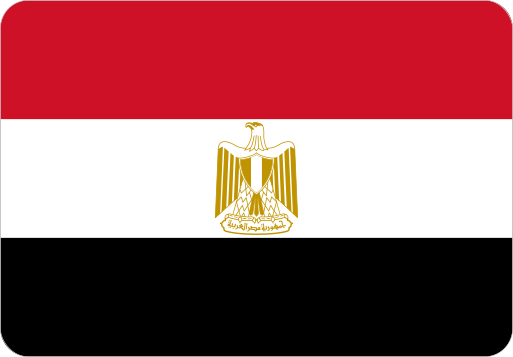

Top Online Casino & Betting Offers for Egypt
We review licensed online casinos and betting sites available for Egyptian players, focusing on security, bonuses, payment methods, and overall reliability.
Trusted reviews, licensed platforms, and exclusive offers for Egyptian players.
We review licensed online casinos and betting sites available for Egyptian players, focusing on security, bonuses, payment methods, and overall reliability.